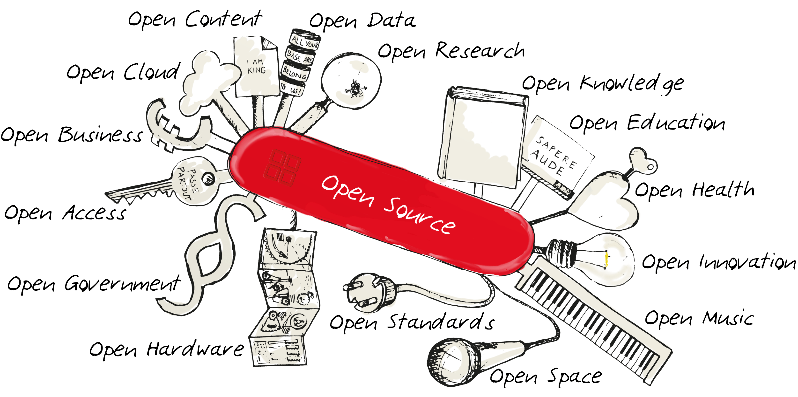
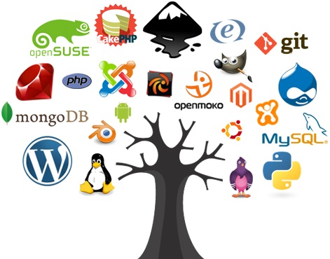
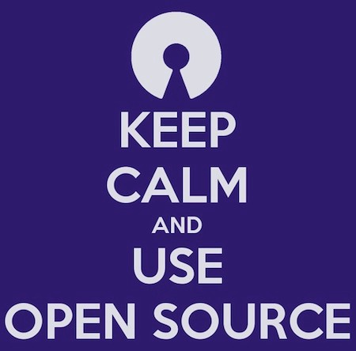

OpenSource, usually a software or a program gives you access to the complete source code.
The access may extend to its implementation, design, or sometimes even
reconfiguration of the actual code-base.
Open Source Softwares encourages developers along with other contributors to freely share
technological advancements so as to enhance human lifestyle, provide more comfort, upgrade product
security and many more.
Who all are OpenSource?
Start naming technologies you’re aware of...
...and google it!
Chances are that 50% of them are open-source.

React (from Facebook) is an open-source JavaScript Framework.
Mozilla Firefox is an open-sourec web-browser.
Linux Kernel and all distros based on it like Ubuntu, Arch Linux, Linux Mint, Kali Linux, and
many
more have their source code open to the world.
The most loved and most efficient code editor, Visual Studio Code (VS Code) has its source code
in
its GitHub Repository .
Dockers, Gatsby, and many many more goes in the list.ыы
A REVOLUTIONARY HISTORY:
Free software (later renamed “open source software”) appeared even before
people
started thinking in terms of proprietary software, at a time when software development was ruled
by open source principles [47]. In the 1960s and 1970s, software programming was mainly
performed in both academic and corporate laboratories by scientists and engineers who freely
gave, exchanged and modified software.
FSF & GNU
Early 80s - Free Software Foundation (FSF)
1985 - GNU Manifesto
GNU Project (GNU stands for “GNU’s not UNIX”)
1989 - GNU General Public License (GPL) ver1 - legalizes “copyleft”
mechanisms
In the early 80s, as software programming increasingly
turned proprietary, Richard Stallman founded the Free Software Foundation (FSF) to define and
diffuse legal mechanisms and conceptual principles of what he called “free software” [19, 49].
By writing the GNU Manifesto (Stallman, 1985), he communicated his ideological view of the
nature of intellectual property rights as regards software, and started attracting convinced
developers to join him in his GNU Project (GNU stands for “GNU’s not UNIX”). In 1989, the
FSF released the GNU General Public License (GPL) version 1 (the updated version 2 was
released in 1991) which legalizes “copyleft” mechanisms and grants end-users freedoms in
software copies and derivative works.
Turning copyright around
The right to full access to the source code
The right for anyone to run the program for any purpose without restriction
The right to modify the source code
The right to distribute both the original software and the modified software
“Copyleft” as expressed by the GPL has had a critical effect on shaping the very
existence of open source software communities. Open source software uses copyright law to
preserve certain freedoms (hence the name, “free software”) regarding the creation, modification,
and sharing of software.
Specifically, all open source software grants users the following key
From free software to open source software: from ideology to $$$
Linux - Linus Torvalds kernel
Successes for Free Software - LAMP (Linux, Apache, MySQL, PHP) systems
Open Source - The Cathedral and the Bazaar
Linux
The Linux kernel, started by Linus Torvalds (a 21-year-old Finnish
programmer), was released as freely modifiable source code in 1991. The licence wasn't a
free-software licence, but with version 0.12 in February 1992, Torvalds relicensed the project under
the GNU General Public License. Much
like Unix, Torvalds' kernel attracted the attention of volunteer programmers. Until this point, the
GNU project's lack of a kernel meant that no complete free-software operating systems existed. The
development of Torvalds' kernel closed that last gap. The combination of the almost-finished GNU
operating system and the Linux kernel made the first complete
free-software operating system.
Successes for Free Software
In the mid to late 90s, when many web-based companies were starting up, free software became a
popular choice for web servers. Apache HTTP Server became the most-used
web-server software – a title that still holds as of 2012. Systems based on a common "stack" of
software with the Linux kernel at the base, Apache providing web services, the MySQL database engine
for data storage, and the PHP (Links to an external site.)
programming language for providing dynamic pages, came to be known as LAMP systems.
Open Source
In 1997, Eric Raymond published The Cathedral and the Bazaar, a reflective analysis of the hacker
community and free-software principles. The
paper received significant attention in early 1998 and was one factor in motivating Netscape
Communications Corporation to release their popular Netscape
Communicator Internet suite as free software. This code is today the basis for Mozilla Firefox .
Netscape's act prompted Raymond and others to look into how to bring free-software principles and
benefits to the commercial-software industry.
The label "open source" was adopted by some people in the free software
movement at a strategy session held at Palo Alto, California, in
reaction to Netscape's January 1998 announcement of a source code release for Navigator. Over the
next week, Raymond and others worked on spreading the word.
Free software VS Open source
by Richard Stallman
“The terms “free software” and “open source” stand for almost the same range of
programs.
However,
they say deeply different things about those programs, based on different values. The free
software
movement campaigns for freedom for the users of computing; it is a movement for freedom and
justice.
By contrast, the open source idea values mainly practical advantage and does not campaign
for
principles. This is why we do not agree with open source, and do not use that
term.”
Richard Stallman and the FSF harshly objected to the new organization's
approach. They felt that, with its narrow focus on source code, OSI was burying the
philosophical and social values of free software and hiding the issue of computer users'
freedom. The idea of open source is that allowing users to change and redistribute the
software will make it more powerful and reliable. But this is not guaranteed. Developers of
proprietary software are not necessarily incompetent. Sometimes they produce a program that is
powerful and reliable, even though it does not respect the users' freedom. Free software
activists and open source enthusiasts will react very differently to that.
Free software VS Open source
Example: developers of proprietary software produce a program that is powerful and reliable
A pure open source enthusiast will say:
“I am surprised you
were able
to
make
the
program work so well without using our development model, but you did. How can I get
a
copy?”
The free software activist will say,
“Your program is very
attractive,
but
I
value my freedom more. So I reject your program. I will get my work done some other
way,
and
support a project to develop a free replacement.”
Advantages
Free and/or Cheaper than Commercial Products
Highly Reliable
Open source software is usually developed by a group of talented and skillful
experts. Sometimes, they are developed by tens or hundreds of volunteers that simply love what they
do for the community. Hence why most of the open source software are high-quality programs.
Open source software help companies save the time and money by providing ready to use software as a
whole.
Disadvantages
Not as User-Friendly as Commercial Software
Lack of extensive tech support
This cannot be generalized for all open source software. For example LibreOffice,
Mozilla Firefox and Android OS are amazingly easy to use. However, while there are several open
source software that solve large problems super fast, complicated computation or big data, but
sometimes not much attention is given to its GUI (Graphical User Interface). This can make the
software annoying to work with especially for nontechnical users.
User communities are out there and can be very responsive, but you really can’t count on the
community one hundred percent of the time since it is not their job. No one is getting paid for
fixing your bugs, provide you or your team the proper training, or respond to your questions and
requirements. If your client or employee is suffering from a bug, you are literally on your own. The
best thing to do might be to just wait for somebody in the community to face the same issue and
hopefully fix it. The other option would be to hire an expert dedicated to maintaining and improving
the software.

It’s an obvious thing, that using open source software save a lot of time and
money, and made a great number of clients happier. Developers love improving and fixing things. They
simply love what they do. So Keep Calm And Use Opensource!
Thank you for your attention!